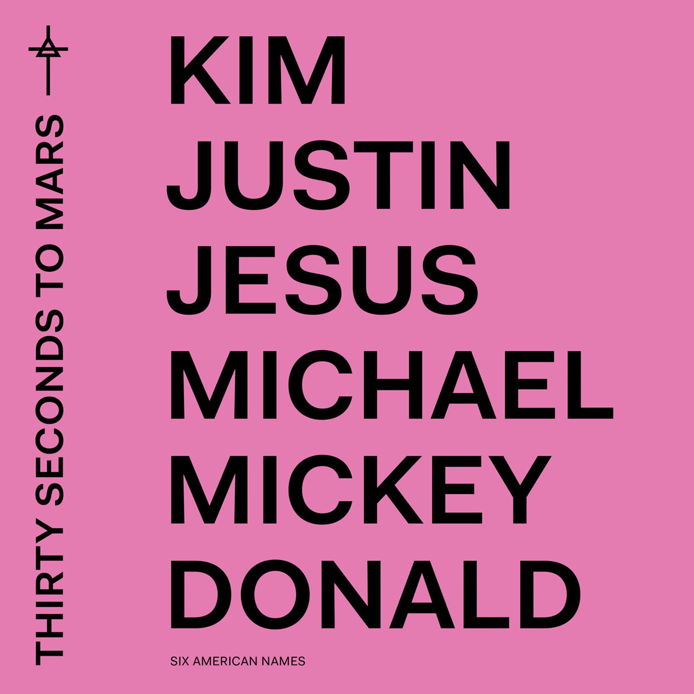

 Thirty Seconds to Mars (с англ. — «Тридцать секунд до Марса») — американская рок-группа из Лос-Анджелеса, штат Калифорния, исполняющая альтернативный рок. Основана в 1998 году братьями Джаредом и Шенноном Лето. Название группы было взято участниками из статьи бывшего гарвардского профессора, где шла речь о технологическом прогрессе, в результате которого человечество в буквальном смысле слова окажется вскоре «в тридцати секундах от Марса». Даже со скоростью света минимальное расстояние от Земли до Марса (во время противостояния) нельзя преодолеть быстрее, чем за 3 минуты.
One Track Mind
(оригинал 30 Seconds To Mars feat. ASAP Rocky)
[ASAP Rocky:]
Love is like problems
Любовь подобна проблемам:
We all got 'em
Они есть у всех нас.
[Jared Leto:]
[Джаред Лето:]
A dark night, remember
Запомни тёмную ночь
The sunrise, surrender
И сдайся на рассвете,
There isn't any other way
И иного пути нет,
There isn't any other way
И иного пути нет.
Hands tied, remember
Руки связаны, запомни:
It's suicide to surrender
Сдаваться — самоубийство,
There isn't any other way
И иного пути нет,
There isn't any other way
И иного пути нет.
I have a one track mind
Я думаю лишь об одном,
I have a one track mind
Я думаю лишь об одном:
There is a method to the madness, to the madness
В хаосе есть логика.
Gotta have a one track mind, ooh
Я должен думать лишь об одном.
I have a one track mind
Я думаю лишь об одном,
I have a one track mind
Я думаю лишь об одном:
There is a method to the madness, to the madness
В хаосе есть логика.
Gotta have a one track mind, ooh
Я должен думать лишь об одном.